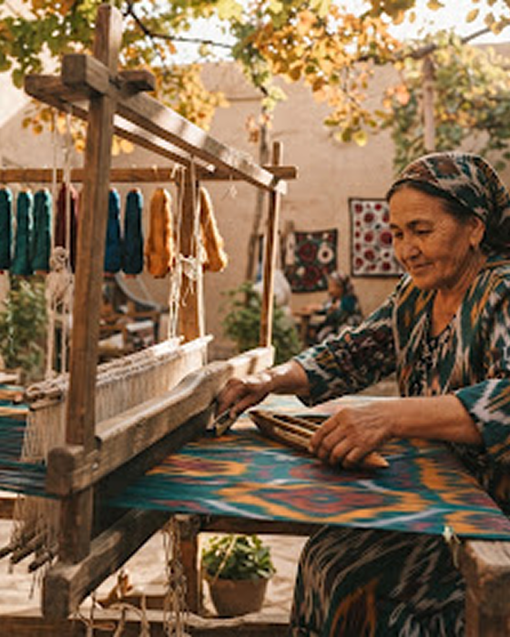
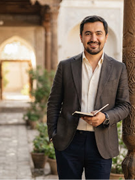
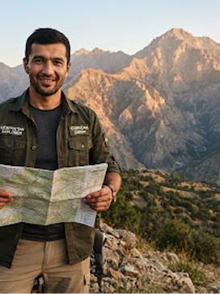

Oʻzbekistonning samimiy mehmondoʻstligini jahon darajasidagi sayohat bilan uygʻunlashtiramiz.
SAFAR bitta ishonchdan tugʻilgan: Markaziy Osiyo va butun dunyo boʻylab sayohat oddiy logistikadan ancha ortiq boʻlishi kerak. Biz Ipak yoʻlining asriy samimiyligi zamonaviy hashamatning puxta aniqligi bilan uchrashadigan individual yoʻnalishlarni yaratamiz.
Amir Temur shoh koʻchasida joylashgan Toshkentdagi maslahat xonamiz Buxoroning feruza rangli minoralaridan Oʻrta yer dengizining chetdagi koʻrfazlarigacha xususiy yoʻnalishlarni uygʻunlashtiradi.
SAFAR raqamlarda
Talabchan sayohatchilar
VIP diplomatlar, dunyo kashfiyotchilari va oilaviy xususiy charterlar
Puxta oʻzlashtirilgan yoʻnalishlar
Ipak yoʻlining eksklyuziv yoʻllari, Yevropa, BAA va Sharq
Aʼlo baho
Mijozlar mamnunligi auditi va shaxsiy mehmondoʻstlik haqidagi sharhlar
Toʻgʻridan-toʻgʻri konsyerj
Har bir transfer davomida WhatsApp va Telegram orqali zudlik bilan hamrohlik

Qadimiy karvon odobi XXI asr sayohat mahorati bilan uchrashadigan joy.
Ming yildan ortiq vaqt davomida Toshkent, Samarqand, Buxoro va Xiva voha shaharlari dunyoning chorrahasida turgan. Anʼanaviy oʻzbek madaniyatida mehmondoʻstlik sanoat emas — bu axloqiy burchdir. Sayohatchilar hashamatli karvonsaroylarda boshpana topgan, xushboʻy choylar bilan mehmon qilingan va sahro yoʻllarida sobit sadoqat bilan qoʻriqlangan.
Biz SAFAR ni shu yuksak odobni zamonaviy sayohatchilar uchun jonlantirish maqsadida tashkil etdik. Toshkentdan Jenevagacha xususiy Gulfstream reysini band qilayotgan boʻlsak ham, Bosfordagi sultonlarga munosib xonalarni taʼminlayotgan boʻlsak ham, Shohizinda maqbaralari boʻylab turistlarsiz, ish vaqtidan keyin yolgʻiz sayr uyushtirayotgan boʻlsak ham — har bir mijozni ajdodlarimiz mehmoni deb bilamiz.
“Sayohat muvaffaqiyatini bosib oʻtilgan masofa bilan emas, balki madaniyat oʻz ruhini sizga ochgan lahzadagi sokin osoyishtalik bilan oʻlchaymiz.”
Maxfiylikning toʻrt ustuni
Qizilqum sahrosi boʻylab boʻladimi yoki Shveytsariya Alp togʻlarida — har bir yoʻnalish bizning asosiy manifestimizga qatʼiy amal qiladi.
Haqiqiy meros va madaniyatga hurmat
Biz yuzaki turistik tuzoqlardan chetda turamiz. Usta restavratorlar, tarixchilar va mahalliy hunarmandlar bilan hamkorligimiz sayohatchilarga jonli madaniy boyliklarga samimiy va hurmatli kirish imkonini beradi.
Imtiyozli kirish
Murosasiz qulaylik va xavfsizlik
Zirhli VIP transferlar va samolyot yonida bevosita kutib olishdan tortib, qoʻlda tanlangan besh yulduzli meros butiklarigacha — begʻubor xotirjamlik, jismoniy xavfsizlik va tiklovchi hashamatni kafolatlaymiz.
Tekshirilgan halollik
Shaffof va adolatli narxlar
Yashirin toʻlovlar, oshirilgan ustamalar yoki tushunarsiz shartnomalar yoʻq. Satrma-satr shaffof hisob-kitoblarimizda barcha davlat ruxsatnomalari, premium tariflar va konsyerj xizmatlari oldindan koʻrsatiladi.
Mutlaq aniqlik
Shaxsiy 24/7 hamrohlik
Sizni hech qachon avtomatik chat-botga topshirmaymiz. Tayinlangan Toshkentdagi ekspeditsiya menejeri joʻnash eshigidan uyga qaytishingizgacha uzluksiz aloqada boʻladi.
Doim yoningizda
Toshkentdan Buxoro, Samarqand va butun dunyo boʻylab
Xususiy hashamatli parkimizga Afrosiyob VIP vagonlarini charter qilish, Islom Karimov nomidagi Toshkent xalqaro aeroportida xususiy samolyotlarga xizmat koʻrsatish hamda asrlik savdogar saroylarini tiklayotgan, qoʻlda tanlangan butik mehmonxonalar kiradi.
Toshkentdagi bosh ofis
Samarqanddagi xususiy villa
Buxorodagi karvonsaroy markazi
VIP ekspeditsiyalar uchun interaktiv xarita
Rahbariyat va sayohat kuratorlarimiz bilan tanishing
Tajribali diplomatlar, koʻp tilli mutaxassislar va mehmondoʻstlik bilimdonlari sayohat dasturingizning har bir kuni soat mexanizmidek aniq bajarilishini taʼminlaydi.


Akkreditatsiyalar va global elita tarmogʻi
SAFAR milliy aviakompaniyalar, fuqaro aviatsiyasi organlari va dunyodagi yetakchi besh yulduzli mehmondoʻstlik portfellari bilan rasmiy ustuvor hamkorlik aloqalarini yuritadi.
VIP HAMKOR
KORPORATIV KLUB
SKYWARDS USTUVOR XIZMATI
TANLANGAN HAMKOR
STARS COLLECTION
HASHAMAT PASPORTI